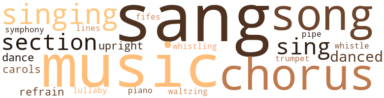
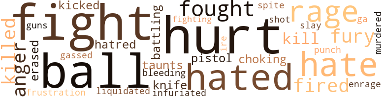

Not Like Niggers, by Williams, E.G. (1969)
59 music-related terms matched in this text.
Most frequent terms in this topic: sang (8); music (7); chorus (6); singing (5); songs (4)
carol.n.01
Definition: joyful religious song celebrating the birth of Christ
| word | sentence |
|---|---|
| carols | Every Christmas the chorus sang carols from the school steps and people came from all over the city to hear . |
| carols | The concert was the night before school closed for the holidays and I knew all the carols we were to sing by heart . |
chorus.n.01
Definition: any utterance produced simultaneously by a group
| word | sentence |
|---|---|
| chorus | She got me into the chorus even though no one could join until third grade . |
| chorus | Every Christmas the chorus sang carols from the school steps and people came from all over the city to hear . |
| chorus | We could n't afford to rent the robe so I told Miss Simmons I was going to leave the chorus . |
| chorus | Cicly refused to tell me what they talked about but a few days later , Mrs. Aiken announced that the chorus would n't wear robes . |
| chorus | The picture was of the chorus on the steps of the school ; the people standing below ; the trees at the side ; the snow ; and me . |
| chorus | It did n't look like me but I knew it was because there were three figures standing at the back of the chorus and the center one was larger than the others . |
cornet.n.01
Definition: a brass musical instrument with a brilliant tone; has a narrow tube and a flared bell and is played by means of valves
| word | sentence |
|---|---|
| trumpet | The record ended and the trumpet of Louis Arm - strong began . |
dance.n.01
Definition: an artistic form of nonverbal communication
| word | sentence |
|---|---|
| dance | The street lights were on ; the trees were bare and their branches moved under the weight of the wind in a melancholy dance . |
| dances | My eyes searched the auditorium until I found Harvey : all the joy and happiness of my soul went into my songs and dances - they wore for Harvey alone . |
dance.v.03
Definition: skip, leap, or move up and down or sideways
| word | sentence |
|---|---|
| danced | They glistened as they danced happily before the street lamp , settled on the bare trees , lay down beside their playmates . |
| danced | Mrs. Johnson said that no one sang or danced half as well as we did , but mother kept talking about how the Lord had provided . |
| danced | A faint wind was blowing and the clothes danced above mother 's head as she and Mrs. Smith faced each other across the fence . |
fife.n.01
Definition: a small high-pitched flute similar to a piccolo; has a shrill tone and is used chiefly to accompany drums in a marching band
| word | sentence |
|---|---|
| fifes | The wailing of my people , the blowing of fifes , the throbbing drums , bore me to the tombs of my ancestors deep in the center of the pyramid . |
lullaby.n.01
Definition: a quiet song intended to lull a child to sleep
| word | sentence |
|---|---|
| lullaby | I remember a lullaby mother sang to me when I was small . |
music.n.01
Definition: an artistic form of auditory communication incorporating instrumental or vocal tones in a structured and continuous manner
| word | sentence |
|---|---|
| music | There was n't the loud nigger music blaring from open doors ; in fact , there were few open doors anywhere , and no one was yelling and cursing and being loud as they did on Church Street . |
| music | Mother 'd he angry if she knew he was playing that kind of music hut it was pretty and sad and lonely and I liked Bessie . |
| music | I 'd tell mother that he was playing nigger music and that Cicly was wearing his pants and they 'd both get it . |
| music | One moment the school yard was buzzing with the chatter and whispering of all those people , and the next moment there was silence , then the void was filled with music . |
| music | Miss Dean preferred music and plays to books , that 's why she was in charge of the May Festival and the dramatic club . |
| music | Only when the music began and the cur - tains opened and I was on the white ship sailing across the oceans and singing did I realize it was true : then I began to live again . |
| music | The others did n't think or read , they were n't interested in politics , or plays , or music , or any - thing . |
piano.n.01
Definition: a keyboard instrument that is played by depressing keys that cause hammers to strike tuned strings and produce sounds
| word | sentence |
|---|---|
| piano | Mrs. Aiken went forward and gave a speech , then Miss Dean sat at the piano . |
pipe.n.04
Definition: a tubular wind instrument
| word | sentence |
|---|---|
| pipe | Mr. Austin filled his pipe . |
refrain.n.01
Definition: the part of a song where a soloist is joined by a group of singers
| word | sentence |
|---|---|
| refrain | She completed the refrain of " Good King Wenceslaus , " and raised her arm , I opened my mouth and sang . |
| refrain | I turned the pages of my book and Mrs. Johnson 's refrain , " you know who you is . . . " drifted through my brain . |
section.n.01
Definition: a self-contained part of a larger composition (written or musical)
| word | sentence |
|---|---|
| section | Mother saw Mrs. Reynolds in the white section begging and said the one thing she 'd never do was bog . |
| section | They always seemed to have enough food and money and quite often cousin Edith and I went down town to the while section . |
| section | Then we entered the white section of town . |
sing.v.02
Definition: produce tones with the voice
| word | sentence |
|---|---|
| sang | Every Christmas the chorus sang carols from the school steps and people came from all over the city to hear . |
| sing | The concert was the night before school closed for the holidays and I knew all the carols we were to sing by heart . |
| singing | Tommy and I were constantly singing them and , at times , I think our joy and excitement were the only things that sustained our families . |
| sing | Rather than he humiliated , I decided I would n't sing at all . |
| sang | She completed the refrain of " Good King Wenceslaus , " and raised her arm , I opened my mouth and sang . |
| sang | The crowd grew larger as we sang . |
| sing | Dad asked me to sing for him . |
| sang | Because I sang so well , she gave me a part in the school play - I was a sailor on board a big ship that went around the world and Cicly was a German princess . |
| sang | Mrs. Johnson said that no one sang or danced half as well as we did , but mother kept talking about how the Lord had provided . |
| sang | Harvey was singing dad 's verses and we always sang them in unison when dad was n't home . |
| sang | I remember a lullaby mother sang to me when I was small . |
| sang | The lighting illuminated the tears on her cheeks as she sang the haunting , plaintive retrain : " Oh ho , oh ho , oh who can I be ? |
singing.n.01
Definition: the act of singing vocal music
| word | sentence |
|---|---|
| singing | Only when the music began and the cur - tains opened and I was on the white ship sailing across the oceans and singing did I realize it was true : then I began to live again . |
| singing | Gradually my ears were captured by the singing coming from the kitchen . |
| singing | Harvey was singing dad 's verses and we always sang them in unison when dad was n't home . |
| singing | We were singing and laughing and talking all the while and before we knew it , everything was ready and we were eating . |
song.n.01
Definition: a short musical composition with words
| word | sentence |
|---|---|
| songs | When she re - turned to her desk , she put the strap away , pulled out a ruler , and began teaching us songs - only I had learned them from Cicly a long time ago . |
| songs | Our songs embraced the night , echoed in the lanes between the houses , rose into the sky . |
| song | The only song I could think of was " We Three Kings . " |
| songs | My eyes searched the auditorium until I found Harvey : all the joy and happiness of my soul went into my songs and dances - they wore for Harvey alone . |
| songs | I huddled next to the pillar , their songs surrounding me , Harvey 's melodic voice crying , " Little lad if daddy goes away , Promise you 'll be good from day to day . . . " And I remained on the porch forgotten . |
| song | Mother asked us to answer the question in the song . |
symphony.n.01
Definition: a long and complex sonata for symphony orchestra
| word | sentence |
|---|---|
| symphony | I waited through the silent symphony while the clock erased the time . |
tune.n.01
Definition: a succession of notes forming a distinctive sequence
| word | sentence |
|---|---|
| lines | Harvey laughed , drew several more lines . |
upright.n.02
Definition: a piano with a vertical sounding board
| word | sentence |
|---|---|
| upright | I sat upright , my eyes darting from mother to dad . |
| upright | And Cicly 's principal said she was the smartest girl in her class and Harvey was going to be an engi - neer . . . Cicly nudged me and I sat upright . |
waltz.v.01
Definition: dance a waltz
| word | sentence |
|---|---|
| waltzing | Mother giggled , too , and a moment later was waltzing about the room . |
whistle.v.01
Definition: make whistling sounds
| word | sentence |
|---|---|
| whistling | We were going upstairs when we heard whistling in the distance . |
| whistle | I tried to whistle as I dashed upstairs to the bathroom . |
92 violence-related terms matched in this text.
Most frequent terms in this topic: hurt (13); ball (11); fight (9); hated (6); hate (5)
anger.n.01
Definition: a strong emotion; a feeling that is oriented toward some real or supposed grievance
| word | sentence |
|---|---|
| ire | She and Ralph swung their hands and grinned like Chesh - ire cats . |
| anger | Dad tried to control his anger and spoke patiently . |
| anger | We watched mother 's anger grow until she could hardly restrain herself and during supper , she almost threw the food on our plates . |
| anger | Mother 's anger really broke when Mrs. Smith began serv - ing food to the foundry hands , not only during the day hut also at night . |
battle.v.01
Definition: battle or contend against in or as if in a battle
| word | sentence |
|---|---|
| battling | I was Columbus , kneeling before Isabella , pleading for the ships that would lead me to discover the Americas ; or , again , an Inca prince , battling the conquistadores who claimed my gold for their wicked queen . |
bleeding.n.01
Definition: the flow of blood from a ruptured blood vessel
| word | sentence |
|---|---|
| bleeding | I put cold water on my head as mother always did and the bleeding stopped . |
enrage.v.01
Definition: put into a rage; make violently angry
| word | sentence |
|---|---|
| enrage | I pressed my lips between my teeth to still my cries , to wipe out the pain , and that I did n't cry seemed to enrage cousin Philip be - cause his blows became harder . |
erase.v.01
Definition: remove from memory or existence
| word | sentence |
|---|---|
| erased | I waited through the silent symphony while the clock erased the time . |
fight.n.05
Definition: a boxing or wrestling match
| word | sentence |
|---|---|
| fights | Do n't let him get in no fights , and you wait up there in that library for Cicly till she gets out of school , you understand ? " |
| fight | I watched her fight the tears and was moved . |
| fights | I was ashamed and embarrassed because the kids joked me about it and I got into several fights . |
| fights | Cousin Philip became angry and threatened to beat me with his razor strap because of the fights . |
| fight | They looked like two dogs , sizing up each other before a fight . |
| fight | He said that after stopping the fight , dad should have taken Cicly aside and talked to her the way he did . |
fight.v.02
Definition: fight against or resist strongly
| word | sentence |
|---|---|
| fight | But as soon as everyone with - drew , I slipped out through a secret door , descended on the infidel invaders , rallied my people to fight , and created leg - ends that would never die . |
| fight | That I 'd have to fight her the same as Harvey , still I could n't do what he because he was older . |
| fought | We fought about it , and after that , it did n't bother me . |
| fought | I fought down my panic , watched him calmly , saw his body weave forward , slump back against the building for support , saw his arm half rise and fall to his side . |
| fight | Cicly wanted to fight but I did n't want to . |
| fought | And she did n't wear pants as much - but she still fought and she could beat Ralph . |
| fought | Again I realized that what I had fought against had hap - pened . |
| fight | Since I did n't want to fight her I decided to ask Harvey . |
| fight | Mother and dad cooked and we did n't argue or fight about whose turn it was to wash dishes , we all helped . |
| fighting | Dad was coming home and saw them fighting . |
| fight | Cicly even apologized to Sarah May after talking to Harvey and said she would n't fight her again because she was pregnant . |
frustration.n.03
Definition: a feeling of annoyance at being hindered or criticized
| word | sentence |
|---|---|
| frustration | The fury and frustration of my unremembered days overflowed with my tears . |
fury.n.01
Definition: a feeling of intense anger
| word | sentence |
|---|---|
| rage | Mother 's eyes were cold with rage , almost hatred . |
| fury | Mother 's fury broke anew . |
| fury | The fury and frustration of my unremembered days overflowed with my tears . |
| rage | We perched on the steps and waited , then went to the ga - rage . |
| rage | Mother was stunned but she recovered quickly and began to work herself into a silent rage . |
| rage | Mother was talking to herself , work - ing herself into another rage . |
| fury | But her fury subsided almost as quickly as it had begun and she was about to sit down when mother ran out of the bedroom and grabbed Cicly and me . |
gag.v.06
Definition: cause to retch or choke
| word | sentence |
|---|---|
| choking | I clung to Harvey 's neck , al - most choking him as he spun around . |
gas.v.01
Definition: attack with gas; subject to gas fumes
| word | sentence |
|---|---|
| gassed | They did n't have any children because cousin Philip went to the war right after they work married and was gassed . |
gun.n.01
Definition: a weapon that discharges a missile at high velocity (especially from a metal tube or barrel)
| word | sentence |
|---|---|
| guns | When we came home from school , we sat on the porch steps and waited for the gangsters to come in their big cars and their machine guns . |
hate.n.01
Definition: the emotion of intense dislike; a feeling of dislike so strong that it demands action
| word | sentence |
|---|---|
| hatred | Mother 's eyes were cold with rage , almost hatred . |
hate.v.01
Definition: dislike intensely; feel antipathy or aversion towards
| word | sentence |
|---|---|
| hate | I stood in the hallway listening to the silence of a strange and empty house wondering what I had done to make Harvey hate me . |
| hate | This made me more ashamed and I grew to hate our home and longed for the hours of school . |
| hated | I hated Tommy at that moment and wished he had never come home with me . |
| hated | Harvey still hated me and was going to leave . |
| hated | " I heard him and papa talking about food not long ago and he said he hated chitlins . " |
| hate | You hate me . |
| hated | I hated to return to Essex Street with its coal yard ; its pad - locked iron foundry ; but mother nodded and we began searching for a bus . |
| hate | " Do you hate mother and dad ? " |
| hate | Harvey touched my shoulders , " No , I do n't hate them , Brad . |
| hated | He was suc - cessful and popular - they envied that - but they hated him for being black and so thoroughly Negro : something they wanted to forget they were . |
| hated | That was the first time I hated him . |
hurt.v.04
Definition: cause damage or affect negatively
| word | sentence |
|---|---|
| hurt | My face hurt so much that I could n't wash it . |
| hurt | I wanted him to be hurt as he had hurt me . |
infuriate.v.01
Definition: make furious
| word | sentence |
|---|---|
| infuriated | She was infuriated and said the only reason Mr. Whitney let Har - vey use the car was so he could make bootleg runs . |
injury.n.01
Definition: any physical damage to the body caused by violence or accident or fracture etc.
| word | sentence |
|---|---|
| hurt | " You might trip and hurt yourself . " |
kick_back.v.02
Definition: spring back, as from a forceful thrust
| word | sentence |
|---|---|
| kicked | He kicked an imaginary pebble , shrugged . |
kill.v.10
Definition: cause the death of, without intention
| word | sentence |
|---|---|
| killed | Boy , you should have seen my old man . . . Sometimes he 'd go off for days and mama 'd get all worked up , thinking he 'd been killed or some - thing , then he 'd come staggering down the street . |
| kill | She would n't go out after dark and when we went to bed , she bolted the doors and windows so the gangsters could n't get in and kill us in our beds . |
| kill | Mother was screaming hysterically and kept saying that dad had tried to kill her . |
| killed | Everyone said they had killed her , just like Mrs. Freeman . |
| killed | But Cicly said that mother had been home for long periods of time , that when I was two years old I had scarlet fever and mother had nursed me herself rather than let me go to the hospital and be killed . |
knife.n.02
Definition: a weapon with a handle and blade with a sharp point
| word | sentence |
|---|---|
| knife | Fact , one time we even had to ... " I closed my mind to their conversation , my gaze fixed on the potato , the dark brown peel curling about the knife , the linoleum between my feet . |
malice.n.01
Definition: feeling a need to see others suffer
| word | sentence |
|---|---|
| spite | Harvey told Cicly and me to pay no attention to Mrs. Smith , that she was still angry with mother and said things just for spite . |
murder.v.01
Definition: kill intentionally and with premeditation
| word | sentence |
|---|---|
| murdered | At night when they talked about how close we all came to being murdered , Cicly and I wondered where we had been and vowed to watch closer the next time . |
| slay | Mr. Austin did n't slay long and when he left Harvey walked with him to the bus stop . |
musket_ball.n.01
Definition: a solid projectile that is shot by a musket
| word | sentence |
|---|---|
| ball | Then mama began to cry and Mrs. Porter looked into her crystal ball and began telling fortunes . . . " Cicly got up to get a glass of water and I wondered how she was going to drink it and still whisper in one continuous breath as she was doing , but she stopped . |
| ball | " We ll go in a minute , " I said and picked up the ball . |
| ball | " We 'll go in a minute , " I tossed the ball . |
| ball | That was when Mr. John drifted through Essex Street , his forlorn cry following him , " Ice man , coal man . . . ice man , coal man . . . " " Come on , throw the ball , " Cicly called . |
| ball | " Give me the ball . " |
| ball | Cicly snatched at the ball . |
| ball | When Cicly went upstairs to wash and change clothes , Harvey and I played ball in the street in front of our house . |
| ball | We moved further and further apart , dodging the trucks from the iron foundry , and throwing the ball over the horse - drawn coal wagons as we shifted about . |
| ball | The ball soared into the air ; Hungie and Jabo raced for - ward , their eyes following its path in the blinding sun . |
| ball | The ball struck the ground behind them and bounced away . |
| ball | For several minutes the ball was passed between Hungie , Jabo , and Harvey , then it was thrown to me and the game continued . |
neutralize.v.04
Definition: get rid of (someone who may be a threat) by killing
| word | sentence |
|---|---|
| liquidated | Harvey said President Roosevelt liquidated it . |
open_fire.v.01
Definition: start firing a weapon
| word | sentence |
|---|---|
| fired | Still , you got him fired and it was a long time before he was able to get another job because times were hard then . |
| fired | They came in a while ago and told us we re fired . |
| fired | " Every - body was fired because of the depression . |
pain.v.02
Definition: cause emotional anguish or make miserable
| word | sentence |
|---|---|
| hurt | She never mentioned it to me and I was hurt that she had secrets . |
| hurt | I wanted him to be hurt as he had hurt me . |
| hurt | " Every - body thinks I was killin ' you out there and I w ' nt gon na hurt you . |
| hurt | No , Lord , it ai n't right . . . " Dad explained the uncertainty of his job but mother was n't interested and Harvey was hurt by the way she had used him . |
| hurt | " They had n't hurt anyone . |
| hurt | I was hurt by Harvey 's statement . |
| hurt | but mom and dad hurt themselves more than any - one else . " |
| hurt | They hurt themselves most of all . . . " His voice trailed off and I glanced up at him . |
| hurt | " When you were lit - tle she . . . there was an accident , she hurt her side and sometimes it still bothers her . " |
| hurt | Then they ca n't hurt you . " |
pistol.n.01
Definition: a firearm that is held and fired with one hand
| word | sentence |
|---|---|
| pistol | Use their roots , make their spells . . . " The table cloth cracked like a pistol as she shook it . |
punch.n.01
Definition: (boxing) a blow with the fist
| word | sentence |
|---|---|
| punch | Harvey and I were a few feet apart from each other when he stopped and threw a fake punch at me . |
shoot.v.02
Definition: kill by firing a missile
| word | sentence |
|---|---|
| shot | Mother 's cough caught me unaware and the pain shot through my leg as I jumped . |
tabun.n.01
Definition: the first known nerve agent, synthesized by German chemists in 1936; a highly toxic combustible liquid that is soluble in organic solvents and is used as a nerve gas in chemical warfare
| word | sentence |
|---|---|
| ga | We perched on the steps and waited , then went to the ga - rage . |
twit.n.02
Definition: aggravation by deriding or mocking or criticizing
| word | sentence |
|---|---|
| taunts | There I endured the taunts of the foundry hands who kept asking why I was n't helping mother and Cicly . |
55 religion-related terms matched in this text.
Most frequent terms in this topic: God (22); church (15); Church (7); Christians (2); choir (1)
choir.n.03
Definition: the area occupied by singers; the part of the chancel between sanctuary and nave
| word | sentence |
|---|---|
| choir | Mrs. Aiken was going from table to table talking to our parents , just before the party ended , Mrs. Aiken called us into the choir room and said she had borrowed robes which we could wear if we wanted to . |
christian.n.01
Definition: a religious person who believes Jesus is the Christ and who is a member of a Christian denomination
| word | sentence |
|---|---|
| Christians | Still he told them what good , upright Christians we were and how mother and dad were some of the best Christians in Metropolitan A.M.E. Zion Church , only thing , dad did n't come to church too often and they missed his beautiful tenor voice on the choir but this maunin . . . He was at it again . |
| Christians | Still he told them what good , upright Christians we were and how mother and dad were some of the best Christians in Metropolitan A.M.E. Zion Church , only thing , dad did n't come to church too often and they missed his beautiful tenor voice on the choir but this maunin . . . He was at it again . |
church.n.02
Definition: a place for public (especially Christian) worship
| word | sentence |
|---|---|
| church | She placed some money on a plate like the one in church and we left . |
| church | He was a real bishop in the methodist church , not one of those jack-legged preachers . |
| church | " First off , he ai n't no God-fearing Christian man and he do n't go to church , and the Bible says . . . " Mother talked on and on but Cicly and I knew that was n't the reason . |
| church | Lots of people on Essex Street did n't go to church and mother did n't say any - thing about them . |
| church | One field blended into another and I recalled that mother said if you worked hard , went to church , and prayed , God would provide . |
| churches | Then I remembered that cousin Edith and I often passed white churches on Sunday . |
| church | She had Indian blood and did n't go to church anyway . |
| church | She said we had to go to church and ask God to forgive us , then when we got enough money , we 'd pay the electric company all we owed them . |
| church | We got up very early and went to church . |
| church | He went right on talking and suddenly old Mrs. Harris , sit - ting on the left side of the church , yelled , " Amen . . . amen . . . " Harvey , Cicly , and I called that side of the church the amen corner . |
| church | He went right on talking and suddenly old Mrs. Harris , sit - ting on the left side of the church , yelled , " Amen . . . amen . . . " Harvey , Cicly , and I called that side of the church the amen corner . |
| church | Still he told them what good , upright Christians we were and how mother and dad were some of the best Christians in Metropolitan A.M.E. Zion Church , only thing , dad did n't come to church too often and they missed his beautiful tenor voice on the choir but this maunin . . . He was at it again . |
| church | The church was hot and stuffy and I could hardly keep my eyes open . |
| church | Then we remembered that she had Indian blood and did n't go to church like we did . |
church.n.04
Definition: the body of people who attend or belong to a particular local church
| word | sentence |
|---|---|
| Church | The store windows were beautifully decorated and they had clothes you did n't see in the stores on Church Street , except at Altschuls and Charles . |
| Church | There was n't the loud nigger music blaring from open doors ; in fact , there were few open doors anywhere , and no one was yelling and cursing and being loud as they did on Church Street . |
| Church | I wished Church Street was more like it . |
| Church | Then I readied out and took her hand and we walked up Only Road to Church Street . |
| church | Mother saw Mrs. Aiken , the principal - she belonged to our church and we all knew her . |
| church | Hardly any people were there while our church was always filled . |
| Church | I began thinking of the shiftless , drunken , lazy Negroes that crowded Church Street ; the hand-slapping , shouting ones at Church ; the stupid , uninteresting kids at school that I could never talk to ; the dirty , disheveled ones I saw walking the streets daily - I was n't like them , I would never be because I was going to make something of my life . |
| Church | I began thinking of the shiftless , drunken , lazy Negroes that crowded Church Street ; the hand-slapping , shouting ones at Church ; the stupid , uninteresting kids at school that I could never talk to ; the dirty , disheveled ones I saw walking the streets daily - I was n't like them , I would never be because I was going to make something of my life . |
| Church | There were none of the run down , dirty stores that filled Church Street . |
god.n.03
Definition: a man of such superior qualities that he seems like a deity to other people
| word | sentence |
|---|---|
| god | As I watched , they paused in front of the furnace god and the flames leaped up , lighting their white , glistening bodies and casting long , eerie shadows that tried to capture me . |
| God | I called down the vengeance of the Sun God and when he failed me , I decided to outwit them , like Br ' er Rabbit . |
| God | Touch one hair on Brad 's head , and God knows , you 'll answer to me . " |
| God | " How could God let them starve ? " |
| God | One field blended into another and I recalled that mother said if you worked hard , went to church , and prayed , God would provide . |
| God | I closed my eyes and asked God to make him return to school but Harvey tried to laugh , could see the tears he was trying to hold hack . |
| God | Ca n't stand the sight of me in the same room with you , and Lord , you 're my own son - " " What on God 's earth will ever satisfy you , mom , what ? " |
| God | " But you did n't , " Mrs. Johnson snapped , " and the Lord , God was with you for that . " |
| God | " God 's will be done . " |
| God | And God rest yo soul ! " |
| God | Mother as - sured him she was up to it , then she told how God had given her the idea in a dream . |
| God | It was only then that mother told her about the restaurant , and how God had given her the idea in a dream . |
| God | Still , she said , no nigger could stop mother from doing what was right for her family and it was right because God had come to mother in a dream and told her to start that there restaurant and it was His work and He was n't gon na let anything happen because . . . She went on and on and Cicly and I were giggling because she was really wound up . |
| God | She said that if God wanted to make us black like them ignorant niggers he 'd have made us black but He wanted us yalla just like He wanted her an Injin , like He wanted everybody the way He made them and that was His will and nobody could do anything about it . |
| God | Them jealous niggers 'd work their conjure and their roots but wa ' nothing they could do because we were working with God and if that wont enough , she had some Injin spells she could work that 'd take care of them roots . . . and she was olf again . |
| God | Perhaps it was because Mrs. Johnson was an Indian and did n't know better or because she said God made us that way and for mother to object , she 'd have been denying God . |
| God | Perhaps it was because Mrs. Johnson was an Indian and did n't know better or because she said God made us that way and for mother to object , she 'd have been denying God . |
| God | Suppose God had given her the idea as she said instead of me , why did she need to go to a conjure woman ? |
| God | Mother told Cicly that God needed a little help now and then and that 's why she went . |
| God | But how did mother know if God needed help ? |
| God | Besides , they said in Sunday School that God could do everything , so He did n't need help . |
| God | She said we had to go to church and ask God to forgive us , then when we got enough money , we 'd pay the electric company all we owed them . |
| God | Reverend Carson was pleased and talked a long time about how good it was to have Brother Peterson back on the choir and Sister Peterson back on the usher board after her long illness when they thought God might call her to His bosom . |
messiah.n.01
Definition: any expected deliverer
| word | sentence |
|---|---|
| Christ | You love your papa more 'n you do me , that 's why - " " For Christ 's sake , mom , will you please stop it ! |
moor.n.01
Definition: one of the Muslim people of north Africa; of mixed Arab and Berber descent; converted to Islam in the 8th century; conqueror of Spain in the 8th century
| word | sentence |
|---|---|
| moor | Miss Dean raised her arms : " We three kings of orient are , Bearing gifts we travel afar , Field and fountain , moor and mountain , Following yonder star . . . " Our voices soared outwards , carried aloft the re - turning breeze . |
preacher.n.01
Definition: someone whose occupation is preaching the gospel
| word | sentence |
|---|---|
| preachers | He was a real bishop in the methodist church , not one of those jack-legged preachers . |
satan.n.01
Definition: (Judeo-Christian and Islamic religions) chief spirit of evil and adversary of God; tempter of mankind; master of Hell
| word | sentence |
|---|---|
| Satan | " The stories people round here tellin ' bout herd shame Satan himself . |
siren.n.01
Definition: a sea nymph (part woman and part bird) supposed to lure sailors to destruction on the rocks where the nymphs lived
| word | sentence |
|---|---|
| siren | But cousin Edith had a jolly laugh that soared high like a siren . |
| sirens | Miss Maudie disappeared ; police sirens screamed ; up and down the street house lights snapped on and people thrust their heads out the windows ; police cars were pouring onto Essex Street slamming to a halt in front of Mr. Whitney 's garage . |